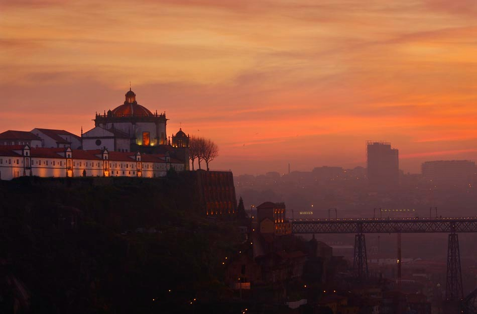

Mosteiro da Serra do Pilar

Edifício do século XVI em Vila Nova de Gaia.

Edifício do século XVI em Vila Nova de Gaia.

Torre barroca do século XVIII no Porto.

Ponte icónica sobre o Rio Douro, conectando o Porto a Vila Nova de Gaia.
| Monumento | Localização | Horário | Preço |
|---|---|---|---|
| Serra do Pilar | Gaia | 10h00 - 18h30 | 4,00 € |
| Torre dos Clérigos | Porto | 09h00 - 19h00 | 8,00 € |
| Ponte D. Luís I | Porto | 24h | Grátis |